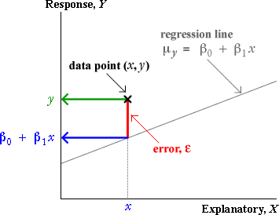
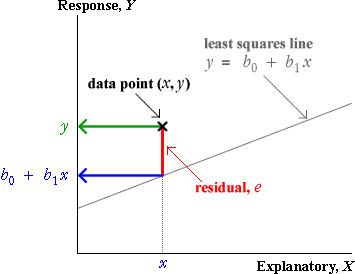

If you don't want to print now,
Bivariate data: population or sample?
In most bivariate data sets, we have no interest in the specific individuals from which the data are collected. The individuals are 'representative' of a larger population or process, and our main interest is in this underlying population.
Example
Data were collected by biologists from 15 lakes in central Ontario to assess how zinc concentrations in an aquatic plant were related to zinc concentrations in the lake sediment.
The biologists want to generalise from these specific lakes (and sediment samples) to describe the relationship between zinc concentrations in sediments and plants in a way that might be used to predict plant zinc from sediment samples in other similar lakes.
Response distribution at each X
In an experiment, several response measurements are often made at each distinct value of X. The diagram below shows one such data set using a histogram for the distribution of Y at each x-value.

Model for data
The response measurements at any x-value can be modelled as a random sample from a normal distribution. The collection of distributions of Y at different values of X is called a regression model.

Normal linear model for the response
The most commonly used regression model is a normal linear model. It involves:
The last two properties of the normal linear model can be expressed as
σy = σ
μy = β0 + β1x
The diagram below illustrates these three properties of the normal linear model: the distributions at different x-values have normal distributions with the same spread and the mean increases linearly with x.

Note: only the response is modelled
A normal linear model does not try to explain the distribution of x-values. In experimental data, they are fixed by the experimenter. In observational data, the x-values are usually random, but the regression model only explains how the y-values are related to them and treats them as constants.
The regression model only describes the conditional distribution of Y at each X.
Alternative descriptions of the model
The normal linear model describes the distribution of Y for any value of X:
Y ~ normal (μy , σy)
where
μy = β0 + β1x
σy = σ
An equivalent way to write the same model is...
y = β0 + β1x + ε
where ε is called the model error and has a distribution
ε ~ normal (0 , σ)
The error, ε , for a data point is the vertical distance between the cross on a scatterplot and the regression line.

Band containing about 95% of values
Applying the 70-95-100 rule of thumb to the errors, about 95% of them will be within 2 standard deviations of zero — i.e. between ±2σ.
Since the errors are vertical distances of data points to the regression line, a band 2σ on each side of it should contain about 95% of the crosses on a scatterplot of the data.

Slope and intercept
A normal linear model,
μy = β0 + β1x
σy = σ
involves 3 parameters, β0, β1 and σ. The model's slope, β1, and intercept, β0, can be interpreted in a similar way to the slope and intercept of a least squares line.
Examples of interpretation
| Context | Interpretation of β1 | Interpretation of β0 |
|---|---|---|
| Y = Yield of wheat per acre X = Fertiliser (kg per m2) |
Increase in mean yield per acre for each additional kg/m2 of fertiliser | Mean yield per acre if no fertiliser is used |
| Y = Exam mark X = Hours of study by student before exam |
Increase in expected mark for each additional hour of study | Expected mark if there is no study |
| Y = Hospital stay (days) X = Age of patient |
Average extra days in hospital per extra year of age | Average days in hospital at age 0. Not particularly meaningful here. |
Least squares
In practical situations, we must estimate β0, β1 and σ from a data set that we believe satisfies the normal linear model.
The best estimates of β0 and β1 are the slope and intercept of the least squares line, b0 and b1
Since b0 and b1 are functions of a data set that we assume to be a random sample from the normal linear model, b0 and b1 are themselves random quantities and have distributions.
Simulated example
The diagram below represents a regression model with a grey band. A sample of 20 values has been generated from this model and the least squares line (shown in blue) has been fitted to the simulated data. The least squares line provides estimates of the slope and intercept but they are not exactly equal to the underlying model values.

A different sample would give 20 different points and a different least squares line, so the least squares slope and intercept are random.
Errors and residuals
The error, ε, for any data point is its vertical distance from the regression line.
In practice, the slope and intercept of the regression line are unknown, so the errors are also unknown values, but the least squares residuals provide estimates.

Estimating the error standard deviation
The third unknown parameter of the normal linear model, σ, is the standard deviation of the errors,
σ = st devn( ε )
σ can be estimated from the least squares residuals, {ei},

This is similar to the formula for the standard deviation of the residuals, but uses the divisor (n − 2) instead of (n − 1). It describes the size of a 'typical' residual.
Example